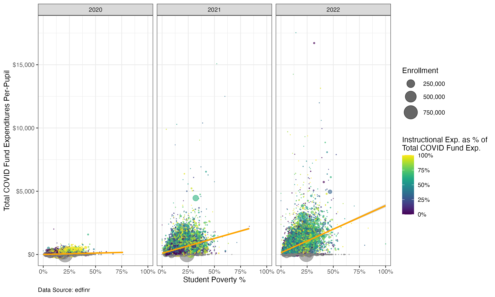
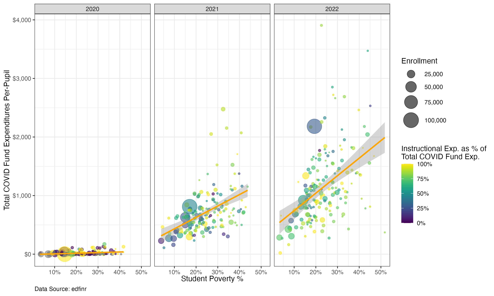

A nationwide analysis with edfinr
2026-03-18
Congress passed three rounds of Elementary and Secondary School Emergency Relief (ESSER) funds:
| Round | Law | Amount | Deadline |
|---|---|---|---|
| ESSER I | CARES Act (Mar 2020) | $13.2B | Sep 2022 |
| ESSER II | CRRSA Act (Dec 2020) | $54.3B | Sep 2023 |
| ESSER III | ARP Act (Mar 2021) | $122B | Sep 2024 |
$190 billion in new federal K-12 spending – unprecedented.
ESSER funds are reported as federal revenue in the F-33 survey.
This means we can track the spending timeline across years.
edfinrselect() key variables for analysisacross()ggplot2filter() to a single state for deeper analysisedfinr’s yr argument accepts a range string — no need for map():
"2020:2022" pulls SY2019-20 through SY2021-22 in one callgeo defaults to national (all districts)dataset_type = "full" gives us detailed expenditure categories and demographicsThe full dataset has hundreds of columns. Let’s pick what we need:
covid_exp <- covid_yrs |>
select(
# identifiers and enrollment
ncesid, year, state, cbsa, cong_dist, dist_name, enroll,
# revenue per-pupil
rev_total_pp, rev_local_pp, rev_state_pp, rev_fed_pp,
# socio-economic variables
mhi, mpv, ba_plus_pct, stpov_pct, urbanicity,
# expenditure data
exp_cur_total, exp_covid_total, exp_covid_instr
)Note the COVID-specific expenditure columns: exp_covid_total and exp_covid_instr. These track ESSER spending separately from general expenditures.
The expenditure columns are totals, not per-pupil. We’ll use across() to convert all at once:
across() with .names creates new columns using glue syntax: exp_covid_total → exp_covid_total_pp.
What fraction of COVID funds went to classroom instruction vs. other uses?
This gives us a 0-1 measure of how each district prioritized instruction with their ESSER dollars.
ESSER funds were allocated via Title I formulas. Did higher-poverty districts actually spend more?
Four aesthetics in one layer:
Now we add a trend line, clean up the scales, and facet by year:
geom_smooth(
aes(
x = stpov_pct,
y = exp_covid_total_pp
),
method = "lm", color = "orange"
) +
scale_x_continuous(labels = label_percent()) +
scale_y_continuous(labels = label_dollar()) +
scale_color_viridis(labels = label_percent()) +
scale_size_area(
max_size = 10,
labels = label_comma()
) +
facet_wrap(~year)geom_smooth(method = "lm") adds a linear regression linescale_color_viridis() gives a colorblind-friendly gradientfacet_wrap(~year) creates one panel per year so we can see changes over timePutting it all together with labels:

The same analysis works for any state with a single filter():
ggplot(data = covid_exp |> filter(state == "KY")) +
geom_point(
aes(
x = stpov_pct,
y = exp_covid_total_pp,
color = exp_covid_instr_pct,
size = enroll
),
alpha = .6
) +
geom_smooth(
aes(
x = stpov_pct,
y = exp_covid_total_pp
),
method = "lm", color = "orange"
) +
scale_x_continuous(labels = label_percent()) +
scale_y_continuous(labels = label_dollar()) +
scale_color_viridis(labels = label_percent()) +
scale_size_area(
max_size = 10,
labels = label_comma()
) +
facet_wrap(~year) +
theme_bw() +
theme(
plot.caption = element_text(hjust = 0)
) +
labs(
x = "Student Poverty %",
y = "Total COVID Fund Expenditures Per-Pupil",
size = "Enrollment",
color = "Instructional Exp. as % of\nTotal COVID Fund Exp.",
caption = "Data Source: edfinr"
)The only change is line 1 — everything else is identical. This is the power of having clean, reusable code.

Use ggsave() to export publication-ready plots:
ggsave() saves the last plot you created. Specify dimensions in inches for consistent sizing across presentations and reports.
Open the exercise page on the workshop website and pick a state to explore.
edfinr Workshop | AEFP26 | Bellwether